[enduser@3xion.dev ~] $ cd proj
[enduser@3xion.dev proj] $ cat favorites.txt
These are, personally, the best things I've programmed in my time as a developer:
macup - a Linux command-line utility for matching MAC address prefixes to their vendors (plus some other cool things). This is a Linux package available on the AUR and the Fedora Copr repository.
span - a noninteractive, btop-like realtime linux system monitor panel with numerous customization options and platform agnosticity. Intended as a static panel, i.e. a screensaver-like thing. Name stands for "system panel."
bullybot - a very customizable one-script python bot that sends Gemini-generated email reminders under the personality of a cartoon bully. This is the only good use of AI. (note: I do not condone bullying, obviously)
p5av - a fully functional and free-to-use audio visualizer engine built around p5js's p5.fft (fast fourier transform) wrapper. Has full video export capability. This was one of my first attempts at real backend, and the resultant code is extremely ugly. Don't judge my ability based on this one.
p5.vectphys - an in-development p5.js vector physics engine based on my own implementation of the p5.vector class. Fully modular, with different modules separated into classes with assigned mutable properties. Interentity collision is not supported. Yet.
n-gon-upgraded - a content mod of the popular browser game n-gon by Ross Landgreen. Adds several upgrades, weapons, enemies, and fields. Written entirely in Matter.js.
collatz - a minimal, uncomplicated tool for calculating, outputting, and natively graphing the Collatz sequence of a number. The website itself is bare-bones, but it's the math that makes it one of my favorites.
code format cheat sheet - a rather large and thorough document specifying general good practice, syntax, and conventions that one will find across most programming languages. Written for my friend when I was a freshman. The Github markdown interpreter messed up the format quite a bit, so I would recommend downloading the Markdown file and loading it into Google Docs.
[enduser@3xion.dev proj] $ cd ..
Nolan Stone 2026